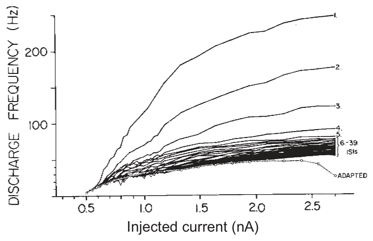
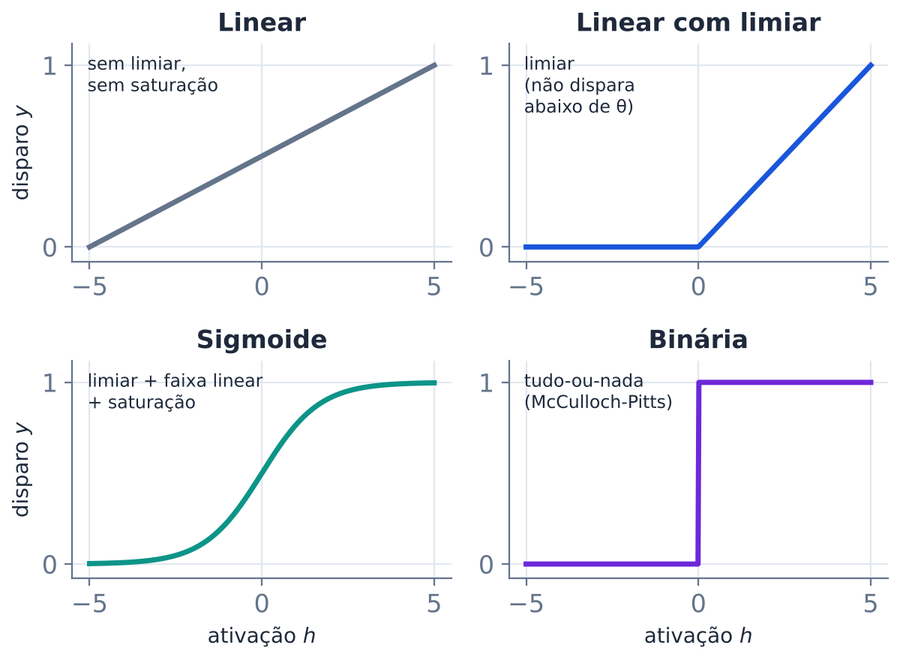

Atividades em sala. Identifique-se abaixo, faça cada atividade quando o professor pedir e toque em Enviar — sua resposta fica registrada e o gabarito aparece em seguida.
Atividade 1 · 3 min · individual
Chute antes de consultar qualquer coisa. Não vale pesquisar!
aQuantos neurônios há no cérebro humano?
bQuantas sinapses (entradas) recebe um neurônio cortical típico?
cPor quanto tempo um neurônio "soma" suas entradas antes de disparar?
dQuanta energia o cérebro consome?
Atividade 2 · 4 min · em duplas


Explore também a aba "Neurônio" da simulação da aula.
aQual função de ativação se ajusta melhor à curva "adapted"?
bEstime o limiar e a inclinação da curva adaptada.
cQue propriedade do neurônio real nenhuma função f(h) estática consegue capturar?
dPor que seria vantajoso para um neurônio adaptar sua taxa de disparo?
Atividade 3 · 3 min · opcional
Ratos aprendem a achar uma plataforma escondida numa piscina de leite opaco, guiando-se por pistas da sala — uma tarefa que depende do hipocampo. Antes do treino, um grupo recebe AP5, um bloqueador dos receptores NMDA, por infusão contínua nos ventrículos cerebrais — de onde o fármaco alcança o hipocampo (Morris, 1989).
aOs ratos com AP5 aprendem onde está a plataforma?
bSe o AP5 for dado depois de o rato já ter aprendido, ele ainda encontra a plataforma?
cJustifique: o que o receptor NMDA faz na indução da LTP, e o que o AMPA faz na expressão?
Atividade 4 · 7 min · em duplas, com calculadora
Quatro neurônios do córtex inferotemporal foram registrados enquanto o animal via cinco rostos. A tabela mostra a resposta média (spikes/s). Numa nova tentativa, a população respondeu com a coluna Teste. Qual rosto foi visto?
| Rosto | Teste | |||||
|---|---|---|---|---|---|---|
| A | B | C | D | E | ||
| N1 | 40 | 6 | 10 | 5 | 18 | 12 |
| N2 | 8 | 35 | 10 | 28 | 5 | 13 |
| N3 | 12 | 15 | 42 | 4 | 10 | 36 |
| N4 | 5 | 10 | 20 | 8 | 36 | 17 |
aCalcule o produto escalar do teste com cada rosto. Exemplo: A = 12×40 + 13×8 + 36×12 + 17×5 = 1101.
Qual rosto foi visto?
bQuantos neurônios contribuem para a resposta "rosto C"?
c"Lesione" um neurônio (remova a linha dele) e refaça a conta. Qual rosto o decodificador escolhe?
dEm que sentido um neurônio cujos pesos são a coluna do rosto C faz esse mesmo cálculo?
Depois de enviar, explore a aba "Seja o decodificador" da simulação.
Atividade 5 · 5 min · individual
Um veículo tem dois sensores de luz e duas rodas. No 2a, cada sensor acelera a roda do mesmo lado; no 2b, a roda do lado oposto. O veículo começa à esquerda da luz, apontando um pouco para cima dela.
aO que faz o veículo 2a?
bE o veículo 2b?
cAgora rode a aba "Veículos de Braitenberg" da simulação. Sua previsão acertou? Com duas luzes, o que faz o veículo 3a?
dInvente um veículo novo (por exemplo, um sensor excitatório e outro inibitório). Que "personalidade" ele teria?
Atividade 6 · 4 min · em duplas
C = computacional (o quê e por quê) · A = algorítmico (como) · I = implementação (com quê)
Atividade 7 · 6 min · em grupos · opcional
A saída deve ser 1 quando as entradas A e B são diferentes. Tente achar pesos para um único neurônio: y = 1 se w₁·A + w₂·B > θ.
| A | B | XOR desejado | saída do neurônio |
|---|
aComputacional: o que XOR computa? Por que um animal precisaria detectar "um ou outro, mas não os dois"?
bAlgorítmico: um único neurônio consegue computar XOR?
cImplementação: Gidon et al. (2020) acharam, em dendritos de neurônios piramidais humanos, potenciais de ação que respondem a entradas fracas e são suprimidos por entradas fortes. Por que isso importa para o XOR?